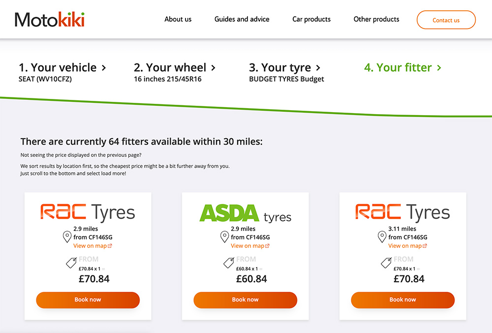
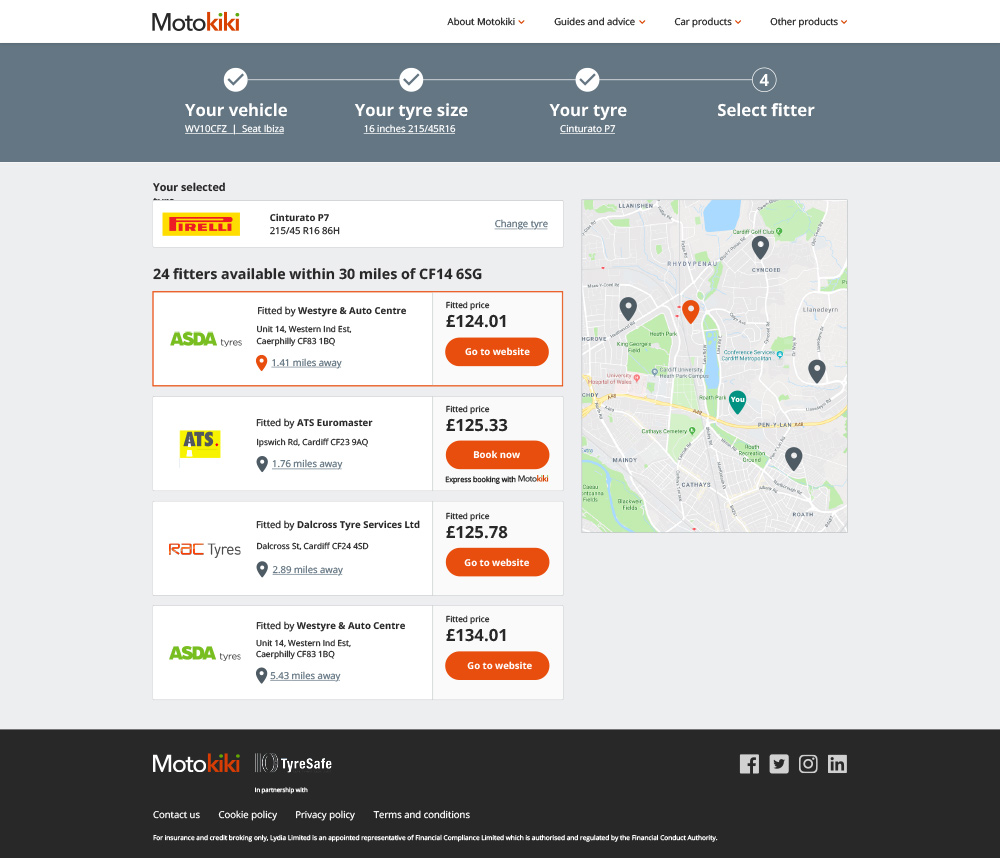

Motokiki
Case studies and work examples from my time at Motokiki as a User Experience Designer.
Key examples
Page contents
Background and responsibilities
I joining Motokiki at an early stage of the start up venture – a comparison site for tyres providing consumers with an impartial data across a wide range of retailers.
My main responsibilities were centred around optimising the user journey to maximise conversion on the ecommerce website. I analysed data collected through analytics and research tools – primarily Hot Jar and Google Analytics – to provide insight into the behaviour of users. This insight was subsequently used to iterate user flows, improve usability and prototype new features. I also planned A/B experiments and championed UX best and accessibility standards within the company.
Identifying exit points
At the time I joined the company, conversion rate was very low at 1.5% compared with the 8% industry average for this type of eCommerce website.
My first task was to identify key exit points in the user journey – to do this I used an online analytics tool called Hot Jar. By looking at the data in hotjar, I was able to clearly identify the two major exit points which was having a negative effect on the coversion rate.
The biggest exit point in the conversion funnel was the fitter selection page.
Before: select fitter page
I could see from data in Hot Jar that most clicked on element on the fitter page was the google maps link. This would take you to the google business profile which included the address, telephone number and website details for the fitter. We were loosing customers by providing an easy exit point to an external website at a crucial part of the conversion funnel.
The solution
The solution to the challenges above was to build our own booking system, this also provided the opportunity to upsell other sevices to the customer during chackout.
After: select fitter page
Designing a booking system
The original business model was to provide customers with impartial information and redirect to external sites to complete the purchase. This provided two challenges for the business:
- The redirect fees for completed purchases were low
- We couldn't control the user experience once a customer left the Motokiki site
Fitters websites were often old and out of date and some sites weren't able to receive information about the customers tyre preference – forcing them to input the data twice.